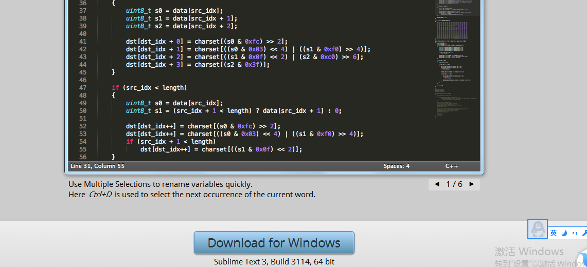
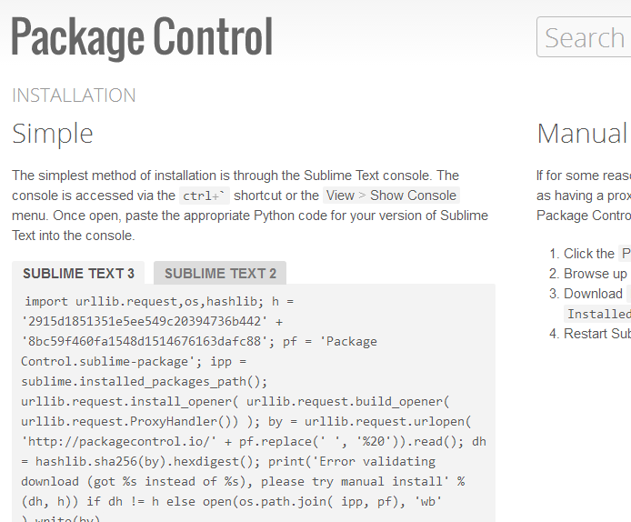
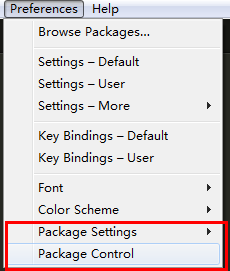
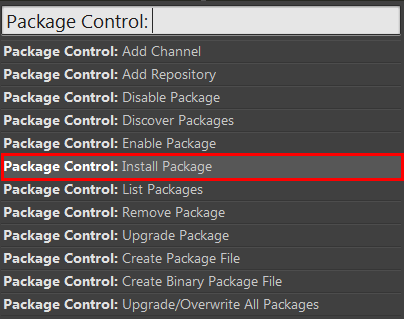

sublime text 及其插件的安装
-
首先下载sublime text3
sublime text 官网地址 http://www.sublimetext.com/

下载安装，
-
安装 sublime text PackageController 打开sublime text
菜单栏 view->Show Console (也可以用快捷键 ctrl+`,有的时候可能因为快捷键冲突无法打开)打开sublime text 控制台
浏览器打开https://packagecontrol.io/installation#st3 复制sublime text3 命令

安装完成,此时，sublime text 菜单栏 Preferences菜单下多了两个选项 Package Settings
如图所示

Package Control
点击Package Control 菜单 会出现如下面板

点击install Package 会出现另一个面板，输入emmet
，下方会自动提示，选择第一个，开始安装，安装成功后重启sublime text
- 菜单栏 Preferences->Package Control